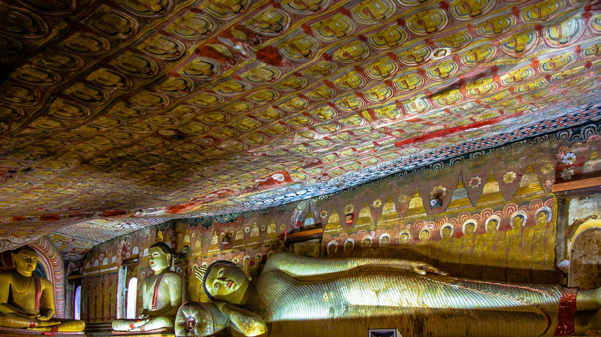

Located in the Matale district, Dambulla Cave Temple is a set of more
than 80 large rock-cut, cave temples in Central Sri Lanka. However,
majority of the attractive murals and Buddha statues are concentrated
in 5 main shrines which are the most impressive. Dambulla Cave Temple
Complex holds an important place in the history of Buddhism because of
the fact that it has been continuously used as a place of worship for
more than two centuries now. Another specialty is that the caves have
been painted in such a manner that devotees can systematically move
through the spaces and rituals at the same time.

Once a sacred refuge, now a world heritage site.
"I personally think that the Dambulla Cave Temples are one of the
most beautiful places to visit in Sri Lanka. If you only visit one
temple while in Sri Lanka, make it the Dambulla Cave Temples!"
- Bailey Stewart
Dambulla Cave Temple on UNESCO World Heritage Convention
The Rock Temple of Dambulla, called Jumbukola Vihara (Dambulla Cave
Temple) in the (Mahavamsa)-the principal Pali Chronicle of Sri Lanka, is
situated about forty-seven miles northwest of Kandy, the last capital of
the Sinhalese kings, on the main road to Anuradhapura. The shortest way,
from Colombo to Dambulla lies via Kurunegala, one of the capitals of the
medieval Sinhalese kings. The other rock temple of equal fame,
Aluvihare, where, according to tradition, the Buddhist scriptures were
first committed to writing about The first century B.C., list about
twenty-six miles to the south on the Kandy Dambulla road. And the famous
fortress of Sigiriya with its beautiful frescoes rises aloft like a
gigantic cylinder at a distance of about twelve miles to the north-east
of Dambulla. Dambulla is a scent of unique interest. Its rock temples
are the most extensive in the Island, and one of the most ancient, and
in the highest state of preservation and order. Dambulu gala (the rock
of Dambulla), in which these temples are situated, is almost insulated
and of vast size. Its perpendicular height above the plain is about six
hundred feet. Very few parts of it are covered with wood, and in
general, its surface is bare and black.
Nestled upon a rocky summit 160 metres above the central city of
Dambulla, this UNESCO World Heritage Site features sanctified caves with
centuries of tales that have shaped the five immaculate Buddhist shrine
rooms open for visitors today. A 14-metre rock state of the Lord Buddha
sits in the Devaraja Lena, otherwise known as The Cave of the Divine
King. The adjacent Maha Raja Vihare, also known as the Cave of Great
Kings, perpetuates the Buddhist veneration with 56 statues of the Lord
Buddha and other deities. The same cave houses a large statue of the
ancient King Valagamba, who took refuge in these very caves for fourteen
years due to a South Indian invasion, but upon regaining power of his
kingdom, converted them to the sacred site we know them as today.
The Maha Aluth Vihare, or Great New Monastery features paintings and
states from the more recent Kandyan period, while the Paccima Vihare and
Devana Aluth Vihare offer further devotion into the Buddhist lineage of
Sri Lanka, with 153 images of the Lord Buddha and over 1,500 ceiling
murals to elegantly complete the historic cave complex.
The temples, which give this place celebrity, are parts of a vast cavern
in the west side of the rock, at the height of about three hundred and
fifty feet above the plain. Whet her the cavern in which these temples
are formed, is altogether natural, or only partly natural, or only
partly natural and partly artificial, it is now not easy to determine.
The probability is, that it is principally natural, and that man has had
very little to do in excavating it. The tradition has it that some of
the caves were excavated by king Vattagamani Abhaya in the first century
B. C. It can be surmised that this king and his successors, in
benefaction to this place had to enlarge and smoothen the caves, and cut
the drip-ledge (katarama) along the rock to protect the caves from
rainwater.
ULTIMATE Guide to the Dambulla Cave Temples, Sri Lanka
If you're planning a trip to central Sri Lanka, you NEED to visit
the Dambulla Cave Temples....